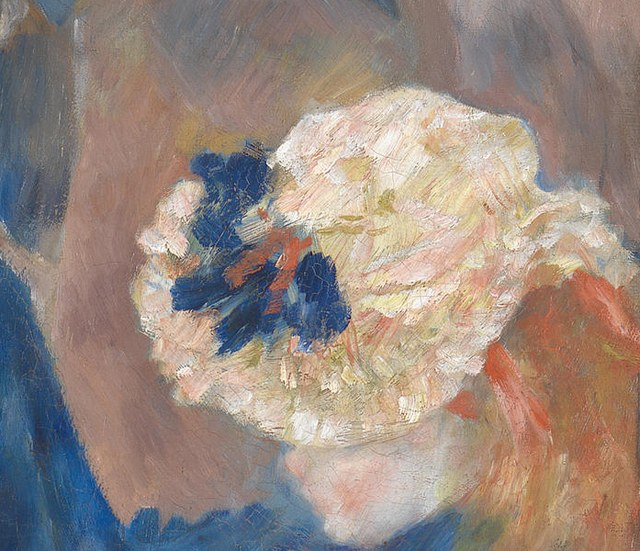
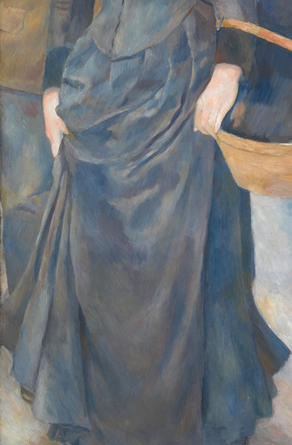
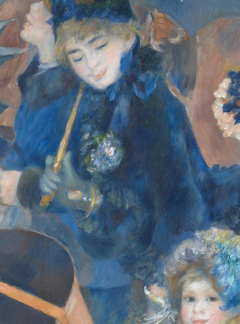

Optima Academy OnlineAn Education Experience Company
Optima Academy OnlineAn Education Experience CompanyLes vêtements
First, a quick look back
You already know French nouns come with a gender: le for masculine, la for feminine, les for plural. Clothing is no different. As each word appears, notice the little article in front — it's part of the word, and later this week it becomes the key to a grammar shortcut.
Listen, then repeat
Click the 🔊 on each word and say it back out loud. Learn the article with the word — is it le, la, or les? Knowing the gender now will make everything else this module easier.
- les vêtementsclothes
- la chemisethe shirt
- le pantalonthe pants
- la robethe dress
- la jupethe skirt
- le manteauthe coat
- les chaussuresthe shoes
- le chapeauthe hat
- le pullthe sweater
- le jeanthe jeans
⭐ Extra practice for this part is in Pour aller plus loin, at the end of the lesson.
You met these clues in Lesson 1.02 (le drapeau, la culture, le monument…). Here they are again, with words from this semester, Module 7 included:
-ment: le vêtement, le moment
-age: le fromage (but watch out: la plage !)
-tion / -sion: l’exposition, la télévision
People: the word follows the person: l’acteur (a man), l’actrice (a woman). No clue? Many words give none (la robe, le pull, la couleur), so always learn the noun with its article.
Three close-ups from Renoir’s Les Parapluies (The Umbrellas), the module’s painting: Parisians in their best clothes on a rainy day. What does each one show? Choose the word: when you are right, you hear it.



Drill the words with the Vocabulaire page
You don’t have to build your word bank from scratch. Open the Module 7 Vocabulaire study page (in this module) — every word, its meaning, and its audio in one place, as flip cards you can drill by ear. Because your Vocabulary Check is listening-based, practice by hearing the word and recalling its meaning.
Making your own digital flash cards on top of that is a great memory booster — but it’s optional, not required.
- Explorer mode: hover and click to learn the 13 metropolitan regions — Île-de-France (home of Paris and its fashion houses), Auvergne-Rhône-Alpes, Nouvelle-Aquitaine, and the rest.
- Quiz mode: timed click-to-find. Your score, errors, and time are shown — restart as often as you like.
- This is where you build the geography for the whole course. Mastering all 13 prepares you for the Carte de France extra-credit challenge in Module 10, the final review.
That is the end of today’s lesson. If you have time, these extras give you more practice. Each one goes with a part of the lesson above.
You now have the ten words that fill any French closet. Say one of them out loud right now, from memory, with the article and the audio in your ear. That’s how vocabulary sticks — à demain ! (See you tomorrow!)